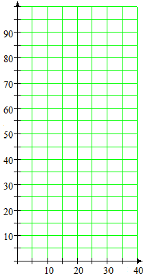
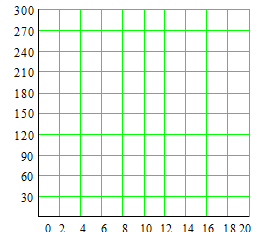

Lesson 1.1 reviews some skills from elementary algebra in the context of applications: solving simple equations and inequalities, evaluating expressions, and graphing an equation by plotting points. We consider linear models of the form \(~y=\) (starting value)\(~+~\)(rate of change)\(\cdot x\text{.}\)
It’s a good idea to work through Lesson 1.1 for the class, so that they have a model to follow for future Lessons. Show students how you want them to record their work. You might use a tablet computer, a document camera, or overhead transparencies to show them exactly how to write their work on the page.
Activity1.1.1.Making and Reading a Graph.
In 2000, the average sea level, \(L\text{,}\) was 24 millimeters above normal, and it has been rising at a rate of 3 mm per year.
Complete the table of values for the sea level \(t\) years after 2000.
\(t~\)(years)
\(0\)
\(1\)
\(5\)
\(15\)
\(20\)
\(L~\)(mm)
\(\hphantom{0000}\)
\(\hphantom{0000}\)
\(\hphantom{0000}\)
\(\hphantom{0000}\)
\(\hphantom{0000}\)
Write an equation for the sea level, \(L\text{,}\) in terms of \(t\text{,}\) the number of years since 2000.
Graph the equation on the grid. Label the axes with the correct variables.
To answer the questions (d) and (e), read the graph. Show your work on the graph:
According to this model, what will the sea level be in 2020?
How long will it be before the sea level is 6 centimeters above average? (How many millimeters are there in 1 centimeter?)

f. Now use algebra to find the answers for parts (d) and (e) above. Compare your answers to the values you read from the graph.
g. Another global warming concern is rising temperature. Since 1950, the global mean temperature in degrees Celsius can be modeled by the equation
\begin{equation*}
T = 13.9 + 0.13t
\end{equation*}
where \(t\) is the number of years since 1950. What do the constants in this equation tell us about global temperature?
\(13.9\) tells us:
\(0.13\) tells us:
Activity1.1.2.A Decreasing Graph.
Silver Lake has been polluted by industrial waste products. In 2000 the concentration of toxic chemicals in the water was 285 parts per million (ppm). Local environmental officials started a program to reduce the concentration by 15 ppm each year.
Complete the table of values showing the concentration, \(C\text{,}\) of toxic chemicals \(t\) years after 2000. Then write your answers as ordered pairs.
Year
\(~~t~~\)
\(C\)
\((t,C)\)
2000
\(0\)
\(\hphantom{0000000}\)
\((0,\hphantom{00000})\)
2005
\(5\)
\(\hphantom{0000000}\)
\((5,\hphantom{00000})\)
2010
\(10\)
\(\hphantom{0000000}\)
\((10,\hphantom{00000})\)
2015
\(15\)
\(\hphantom{0000000}\)
\((15,\hphantom{00000})\)
Label the axes, plot the ordered pairs on the grid, and connect them with a straight line.

In one or two complete sentences, explain why you should stop the graph at the horizontal axis.
What does the point \((16,45)\) tell us about this situation? (Use complete sentences!)
Use the graph to find those years when the concentration will be below 120 ppm but above 30 ppm. Show your work on the graph. Highlight the appropriate portion of the graph, and then the corresponding portion of the horizontal axis.
Write an equation for the concentration, \(C\text{,}\) of toxic chemicals \(t\) years after 2000.
Write and solve an inequality to verify your answer to part (e).
Subsection1.1.1Check Your Understanding
In Activity 1b, you wrote an equation for sea level, \(L\text{.}\) What was the starting value, and what was the rate?
In part (d) of Activity 1, did you evaluate an expression or solve an equation?
In part (e) of Activity 1, you solved an equation by using the graph. Did you start by locating the given value on the horizontal axis, or on the vertical axis?
In Activity 2, which variable goes on the horizontal axis?
In part (e) of Activity 2, you solved an inequality. On which axis did your answers appear?
Subsection1.1.2Wrap-Up
In this Lesson, we worked on the following skills and goals related to linear models:
Analyze linear models given by a description in words, by a graph, by a table of values, or by an equation.
Write an equation for a linear model described in words, in the form:
\begin{equation*}
y=\text{(starting value)} + \text{(rate)} \times t
\end{equation*}
Interpret an ordered pair of values for a linear model.
Make a graph from a table of values by choosing appropriate scales for the axes and plotting points.
Evaluate an algebraic expression.
Solve linear equations and inequalities.
Use a graph to evaluate an expression or solve an equation.
Subsection1.1.3Questions for Writing or Discussion
Describe some ways to display the relationship between two variables.
What is the difference between an expression and an equation?
What is the difference between evaluating an expression and solving an equation?
Explain how to find the \(x\)-value that corresponds to a given \(y\)-value on a graph.
Concept Questions.
How many points do you need to graph a linear equation?
Two
Three
One in each quadrant
It depends on the equation
When you graph the data given in a table, on which axis do you show the variable in the first row of the table?
The linear axis
The horizontal axis
The vertical axis
Both axes
If \(C\) is expressed in terms of \(H\text{,}\) which variable goes on the horizontal axis?
\(\displaystyle C\)
\(\displaystyle H\)
\(\displaystyle x\)
The smaller one
If \(x \gt 5\text{,}\) what is true about \(2x\text{?}\)